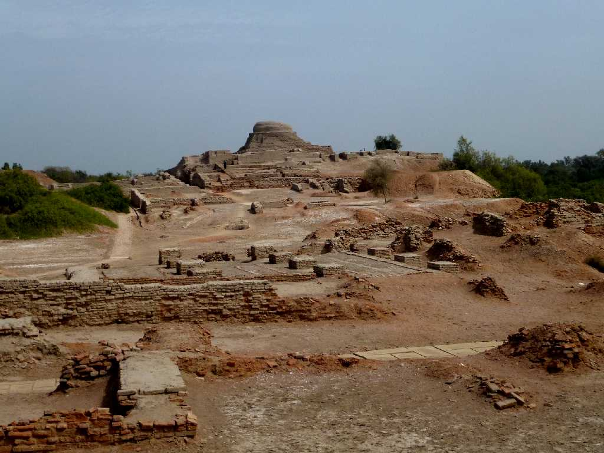
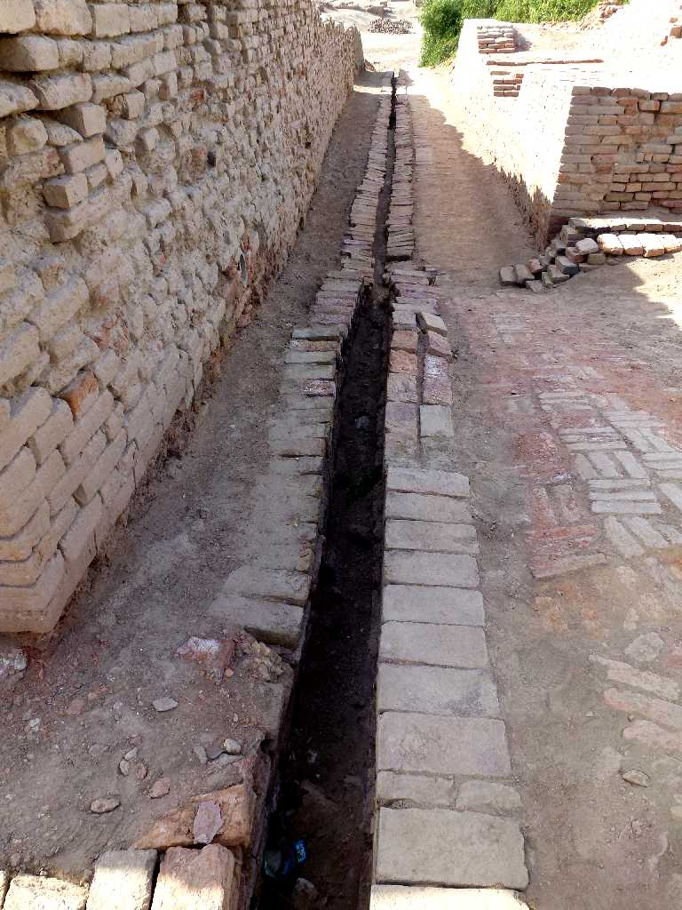
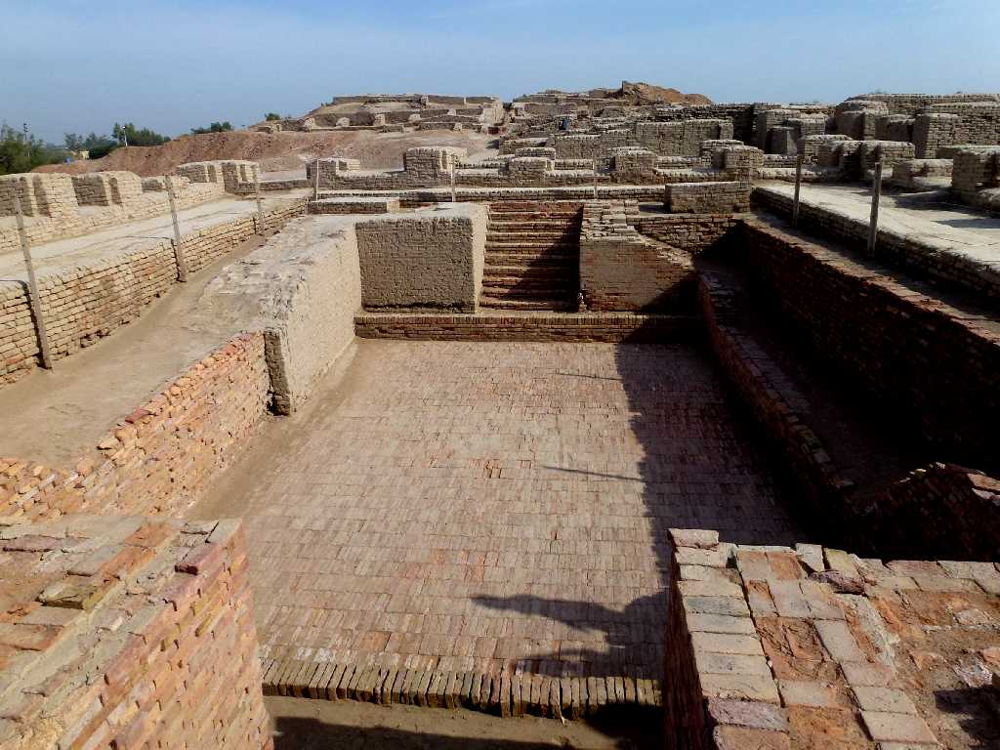
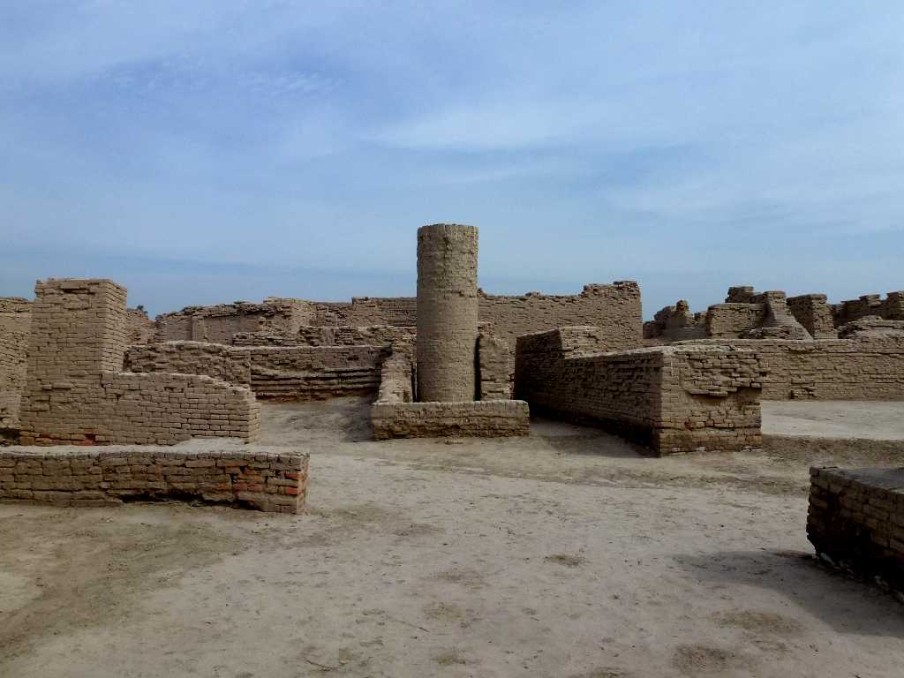
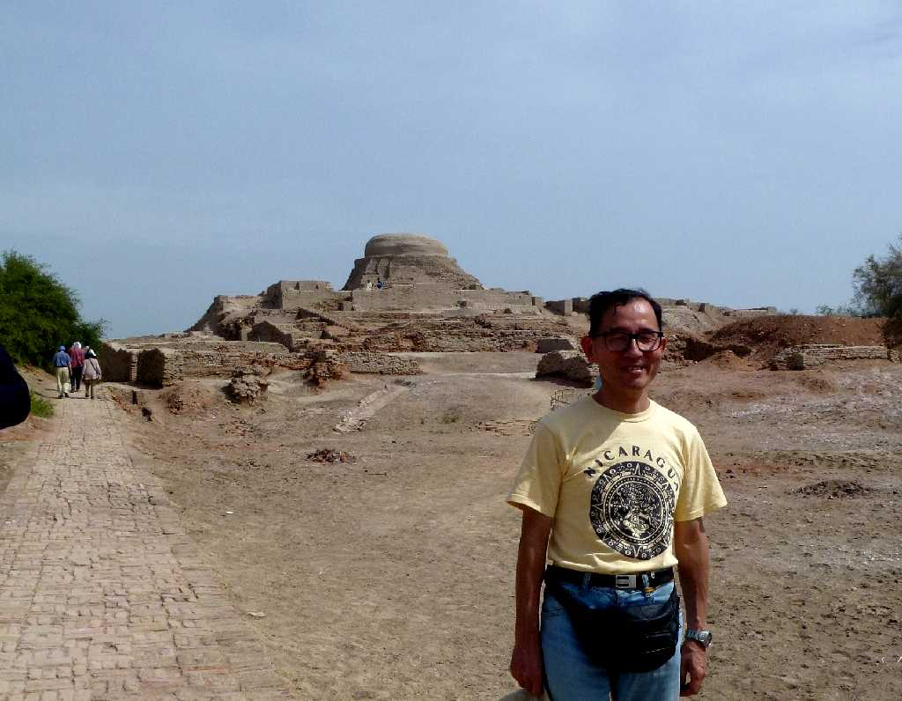

Mohenjodaro
紀元前２６００年から紀元前１７００年に栄えた３万人が暮らした都市と考えられているインダス文明最大級のモヘンジョダロ遺跡

Waterway Mohenjodaro
４０００年以上前の都市の水路

Great Bath Mohenjodaro
インダス文明の大浴場

Well Mohenjodaro
家の２階から水を汲むために創られた井戸
King Priest Mohenjodaro National Museum Karachi
モヘンジョダロ遺跡から出土した紀元前２６００年頃創られたと考えられている１０００℃以上の高熱で焼かれた白色ソープストーンの神官王像

March 25 2013 Mohenjodaro